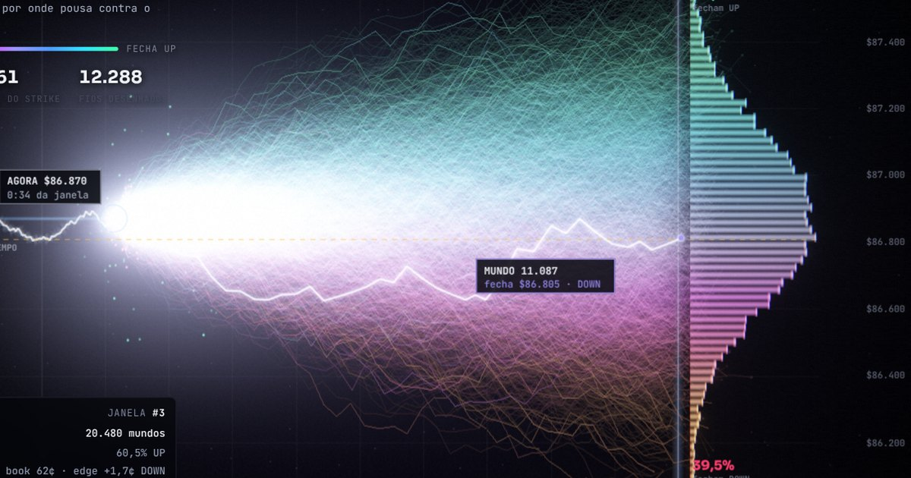

Multiverso
20.480 futurosQuatro vezes por segundo a mesa roda de novo 20.480 futuros do BTC até o fechamento. Cada fio é um mundo, colorido por onde pousa contra o preço a bater; o leque se transforma sem parar e colapsa num só no fim da janela.
WebGL2 em HDR20.480 caminhos aleatóriosprofundidade 3Dbloom